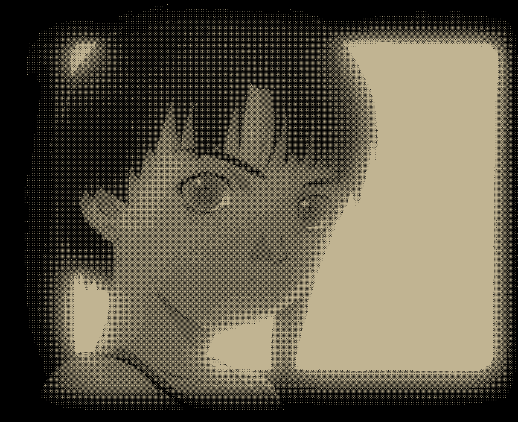

我喜欢很多东西。
请注意：为了避免对定义权不必要的争夺，我声明如下：我认为计算数学不是数学。
请和我讨论文学吧！有文学存在，我感觉这世界是幸福的！我什么种类的书都读，我喜欢很多作家，读他们的文字就像在偷窃一样，那样美妙的语句就这样被我看到了，那样震撼人心的思想就这样被我拿在手中、这样轻轻地被我读着！
杜拉斯、老舍、巴金、卡尔维诺、贝克特、穆齐尔、卡夫卡、陀思妥耶夫斯基、波拉尼奥、布鲁诺、阿莱杭德娜、萨瓦托、博尔赫斯、川端康成、迪伦马特、海子……
还有许多、许多人……
另外，我喜欢九十年代的网络文化：扑朔迷离、带有恐怖色彩。
